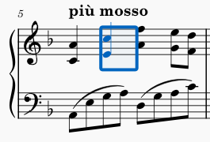
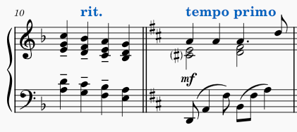
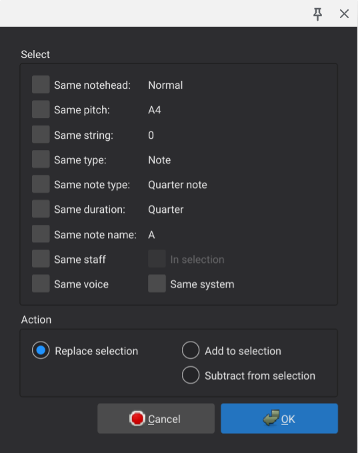

选择元素
在 MuseScore 中，你可以使用键盘或鼠标选择元素。选择可以包含单个元素、可能不连续的多个单独元素组成的列表，或包含其中元素的小节与谱表范围。某些命令只作用于单个元素或列表；有些只作用于范围；还有一些可作用于任意类型的选择。任何给定命令的文档都应说明允许哪些类型的选择。
选中时，元素显示为蓝色（或该元素所属 声部 定义的颜色）。

对于范围选择，整个范围周围会出现一个蓝色矩形。

选择单个元素
用鼠标选择单个元素时，直接单击它即可。
用键盘选择单个元素时，使用方向键 导航 到该元素。注意，在 MuseScore 中，除了 音符输入 模式外，没有独立于选择之外的“光标”概念。在 普通 模式下，左右方向键在导航时会逐个选择元素，因此虽然严格来说没有光标，但选择本身会起到类似的作用。
单独使用方向键时，只在音符和休止符之间导航。与 Alt 键组合使用时，会在所有元素之间导航，包括演奏记号、力度记号和其他标记。
音符
一个音符通常由多个元素组成：符头、符干、符尾、附点、变音记号等。大多数作用于单个音符的命令都要求你选择符头本身。
和弦
和弦的音符共享单根符干和符尾。即使单个音符也可以被视为“和弦”，因为它由这些多个元素组成。
要选择一个完整的和弦（所有符头加上符干和其他元素），先确保当前没有选中任何内容（可以按 Esc 键确认），然后 Shift+单击该和弦。这会创建一个涵盖该和弦的 范围选择。

注意，该选择可能还会包含其他声部中的内容（如果存在），但如有必要，请参阅关于 从范围选择中排除元素 一节了解如何避免。
重叠元素
如果多个元素重叠，单击会选择最顶层的元素。要选择当前选中元素下方的元素，请 Ctrl+单击它。这会取消选择当前选中的元素，并选择其下方的下一个元素（如果有）。因此，反复 Ctrl+单击 可以在重叠元素之间循环选择。
选择多个单独元素组成的列表
你可以手动逐个选择来建立元素列表，也可以使用命令自动选择与给定元素相似的元素。
手动选择多个元素
要把一个元素添加到已选元素列表中，Ctrl+单击它。如果某元素已被选中，Ctrl+单击 会把它从已选列表中移除。

你也可以使用 Ctrl+单击 在 范围选择 中添加或移除单个元素。在此过程中，选择会转换为列表选择。
如果你要选择的元素位于谱表之外且没有其他元素遮挡，可以通过 Shift+拖动 在所需元素周围画一个选择框来创建列表选择。不过，如果包含任何音符或休止符，则会改为执行 范围选择。
自动选择相似元素
要选择整个乐谱或给定谱表中某一类型的所有元素：
- 右键单击一个此类元素
- 在出现的菜单中，根据需要单击 选择→相似元素 或 选择→当前谱表中的相似元素
要选择某一范围内的某一类型的所有元素：
- 单击第一个此类元素
- Shift+单击最后一个此类元素
——或——
- 使用下文所述技巧执行 范围选择
- 右键单击范围内的一个元素
- 在出现的菜单中，单击 选择→此范围内的相似元素
要创建更复杂的相似元素选择：
- （可选）执行 范围选择
- 右键单击一个元素
- 在出现的菜单中，单击 选择→更多
- 在出现的对话框中勾选所需选项（见下文）
选择对话框中可用的选项取决于你右键单击的元素类型。

特定于音符的选择选项包括：
- 相同符头：符头组相同（普通、叉形、斜线等）的音符
- 相同音高：音名、变音记号和八度相同的音符
- 相同弦：位于同一根弦上的音符（仅吉他谱）
- 相同类型：类型相同的音符（普通、短倚音、长倚音）
- 相同音符类型：时值相同的音符，不考虑附点或连音
- 相同时值：实际时值相同的音符
- 相同音名：音名和变音记号相同、不考虑八度的音符
- 相同谱表：位于同一谱表中的音符
- 相同声部：位于同一声部中的音符
- 在选区内：当前选区内的音符
- 相同系统：位于同一系统中的音符
除了特定于类型的选择选项外，对话框底部还有所有元素类型共有的操作选项。这些选项控制对所选元素执行的操作，一次只能选择其中一项：
- 替换选择：勾选后，此操作会替换现有选择
- 添加到选择：勾选后，此操作会把元素添加到现有选择
- 从选择中减去：勾选后，此操作会从现有选择中移除元素
选择小节和谱表范围
范围选择包含从给定起始时间位置到结束时间位置、跨一组给定谱表的所有元素。它是复制、粘贴等操作的常见起点。
通过拖动选择范围
仅用鼠标选择小节和谱表范围时，使用 Shift+拖动 在周围画一个矩形。注意，这只适用于能一次显示在屏幕上的较小选择。
通过单击选择范围
更灵活的选择方法是结合鼠标和键盘：
- 单击所需选择的第一个音符或休止符
- Shift+单击最后一个
在单击和 Shift+单击之间，你可以使用 导航 命令定位乐谱。这样就能做出跨越数页的选择。
如果你先单击最后一个音符/休止符，再 Shift+单击第一个，此方法同样有效。
使用键盘选择范围
你也可以仅用键盘或主要用键盘进行范围选择：
- 使用键盘导航或单击选择第一个音符或休止符
- 在键盘导航时按住 Shift，边导航边扩展选择
可用的命令包括：
- Shift+Left 和 Shift+Right：一次扩展一个音符或休止符
- Shift+Ctrl+Left 和 Shift+Ctrl+Right：一次扩展一个小节（Mac：用 Cmd 代替 Ctrl）
- Shift+Up 和 Shift+Down：一次扩展一条谱表
- Shift+Home 和 Shift+End：扩展到系统的开头或结尾
- Shift+Ctrl+Home 和 Shift+Ctrl+End：扩展到乐谱的开头或结尾（Mac：用 Cmd 代替 Ctrl）
特殊范围选择
MuseScore 包含一些用于快速选择的特殊命令：
- 编辑→全选 或 Ctrl+A（Mac：Cmd+A）：选择整个乐谱
- 编辑→选择当前段：选择乐谱的当前乐段（上一个和下一个 乐段分隔符 之间的所有内容）
从范围选择中排除元素
对于涉及范围选择的某些操作，你可能希望从选择中排除某一类型的元素。例如，你可能想复制一个乐句中的音符、休止符和大多数其他标记，但跳过歌词。或者在有多个声部的段落中，你可能想删除声部 1 以外的所有内容。要从范围选择中排除某一类型的元素：
- 正常执行范围选择
- 用 视图→选择过滤器 打开 选择过滤器
- 取消勾选任何你想从选择中排除的元素类型

注意，如果你排除了声部 1，就无法选择其他声部没有内容的任何小节。因此，在执行排除声部 1 的操作后，务必恢复声部 1。例如，如果你只想复制粘贴声部 2，先进行范围选择，用 选择过滤器 排除声部 1，使用 编辑→复制 或 Ctrl+C，然后在选择粘贴目标之前恢复声部 1 旁的勾选。